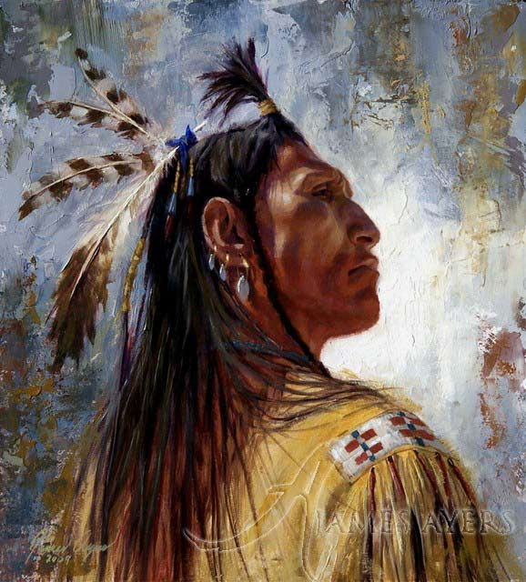
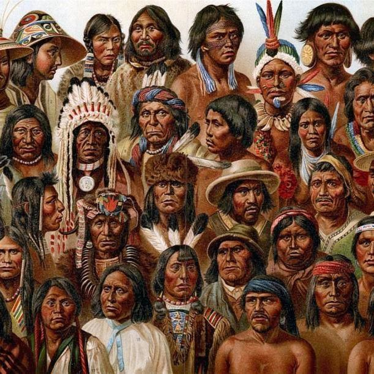
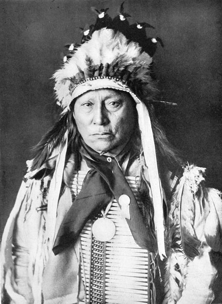

Native Americans in the United States
Native Americans, also known as American Indians, Indigenous Americans and other terms, are the indigenous peoples of the United States, except Hawaii. There are over 500 federally recognized tribes within the US, about half of which are associated with Indian reservations. The term "American Indian" excludes Native Hawaiians and some Alaska Natives, while Native Americans (as defined by the US Census) are American Indians, plus Alaska Natives of all ethnicities. Native Hawaiians are not counted as Native Americans by the US Census, instead being included in the Census grouping of "Native Hawaiian and other Pacific Islander".

Background
Since the end of the 15th century, the migration of Europeans to the Americas has led to centuries of population, cultural, and agricultural transfer and adjustment between Old and New World societies, a process known as the Columbian exchange. As most Native American groups had historically preserved their histories by oral traditions and artwork, the first written sources of the conflict were written by Europeans
Ethnographers commonly classify the indigenous peoples of North America into ten geographical regions with shared cultural traits, called cultural areas.Some scholars combine the Plateau and Great Basin regions into the Intermontane West, some separate Prairie peoples from Great Plains peoples, while some separate Great Lakes tribes from the Northeastern Woodlands. The ten cultural areas are as follows:
- Arctic, including Aleut, Inuit, and Yupik peoples
- Subarctic
- Northeastern Woodlands
- Southeastern Woodlands
- Great Plains
- Great Basin
- Northwest Plateau
- Northwest Coast
- California
- Southwest (Oasisamerica)

History
It is not definitively known how or when the Native Americans first settled the Americas and the present-day United States. The prevailing theory proposes that people migrated from Eurasia across Beringia, a land bridge that connected Siberia to present-day Alaska during the Ice Age, and then spread southward throughout the Americas over the subsequent generations. Genetic evidence suggests at least three waves of migrants arrived from Asia, with the first occurring at least 15 thousand years ago. These migrations may have begun as early as 30,000 years ago and continued through to about 10,000 years ago, when the land bridge became submerged by the rising sea level caused by the ending of the last glacial period. These early inhabitants, called Paleoamericans, soon diversified into many hundreds of culturally distinct nations and tribes.